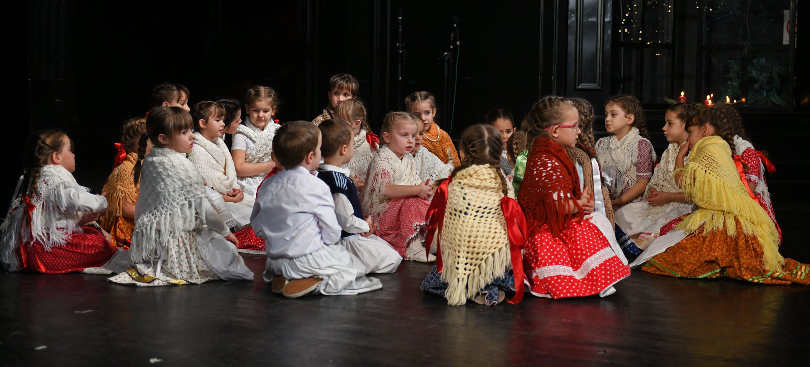

Futkáncok gyermektáncegyüttes

Ez a VMNKK legfiatalabb együttese, akár a megalakulásának a dátumát, akár a tagjai életkorát vesszük figyelembe. Azok a kis gyerekek akik szüleikkel együtt elkísérték idősebb testvéreiket a táncpróbára gyakran a próbateremben maradtak, "csak úgy oldalt hogy ne nagyon zavarjanak..." Hamar felmerült az ötlet és az igény, hogy az óvodás korú gyermekek számára is alakuljon egy csoport. Jelenleg a Futkáncok együttes tagságát a négy évestől az elsős áltolános iskolásig terjedő korosztály képezi.
A Futkáncok táncegyüttes 2018. októberében kezdte a munkáját. A csapat rövid fennálása alatt a szülőknek és a helyi közönségnek mutatkozott be az évadzáró és a kerácsonyi műsoron.
A futkáncos gyerekek mindenek előtt magyar népi játékokkal ismerkednek. Egyidejűleg, észrevétlenül, a magyar néptánckincsre jellemző legalapvetőbb mozdulatformákat is megtanulják.
A Futkáncok gyermektáncegyüttes heti két alkalommal tartja foglalkozásait. A kis csapatot megalakulása óta Tóth Andrea vezeti. Munkáját Takács Zsuzsanna segíti.
Manó gyermektáncegyüttes
A Manó gyermektáncegyüttes megalakulásához ugyanolyan oko vezettek mint a legfiatalabb csapatnál. Központunkban kialakult szokás szerint a felcseperedő gyerekek idővel nem kerülnek át az "idősebb csoportba", hanem a saját csapatukkal nőnek tovább amíg tart a táncos karrierjük.
A Manó gyermektáncegyüttes központunk megalakulásánál is jelen volt és a 2011-es feloszlásáig működött aktívan. 2015 októberében a kiüresedett csoport feltöltődött és újra kezdte a munkát.
Jelenleg a Manó gyermektáncegyüttes tagságát az alsós általános iskolás gyermekek (másodiktól a negyedik osztályig) alkotják
Ennek a csapatnak a tagjai a népi gyermekjátékok mellett már konkrét táncos mozdulatokat, táncfigurákat tanulnak. Ez mellett alap szinten a tanult táncokhoz kapcsolódó elméleti ismereteket is tanulják mit pl. földrajzi elhelyezkedés, táncos szokások, táncillem.
A manós gyerekek nem egyszer mutatkoztak be a nagyérdemű előtt. Az együttes tagjai a bronztól az aranyon át a külön díjakig terjedő elismerésekkel tértek haza a fesztiválokról.
A Manó gyermektáncegyüttest - annak újraalakulása óta - Takács Zsuzsanna és Tóth Andrea vezetik. A csapat hetente kétszer tartja foglalkozásait.
Tűzrevaló gyermektáncegyüttes

Ez a csoport is az előző kettővel azonos módon alakult 2012-ben. Sok gyermek táncolt ebben a csoportban és közülük jópáran a mai napig is aktívak. Jelenleg ez a csapat a felsős általános iskolás diákokat tömöríti (ötödiktől a nyolcadik osztályosig).
Ahogy cseperedtek a tűzrevalós gyerekek egyre összetettebb mozgásformákkal ismerkedtek meg. Egyben táncos tudásukat a magyar nyelvterület külömböző tájegységeinek táncaival bővítették. A konkrét táncos mozgás mellett ezek a gyerekek már részletesebb elméleti tudásra tesznek szert a tanult táncokról, táncos szokásokról, táncillemről, a tánc kísérő zenéjéről...
Annak ellenére, hogy a Tűzrevaló táncegyüttes országhatáron kívül nem szerepelt, a külömböző hazai fezstiválokról bronz, ezüst, arany oklevelekkel tértek haza. A gyermek szólótáncversenyen több ízben ezüst és arany okleveleket érdemeltek ki a tűzrevalós táncosok.
A Tűzrevaló gyermektáncegyüttes hetente két alkalommal tartja próbáit. Az együttes vezetői Kiss Zsélykó és Tóth Andrea.
Citera csoport
Citera az egyik legegyszerűbb és legelterjedtebb népi hagszerünk. Hagyományosan szinte minden házban volt egy citera. MInden ügyesebb parasztember maga elkészíthette és viszonylag könnyű megtanulni játszani rajta. Citera rendszerint a házi mulatságok hangszere volt, de egy vagy két citerás akár egy táncmulatságot is lekísérhetett.
A meglévő érdeklődés és azon szerencsés körülmény következményeként hogy városunkban egy citeraoktató is tartózkodik 2019 októberében megalakult a citeraegyüttesünk. Mivel az együttes jelenlegi tagjai a legkülönbözőbb korosztályokat képviselik a munka három korcsoportra bontva folyik. Pillanatnyilag minden koroszály heti egy alkalommal próbál. Az a szándékunk, hogy a próbák számát heti kettőre növeljük.
Szándékunk szerint idővel a citeraegyüttesünk képes lesz a tánccsoportjaink egyes koreográfiáinak kíséretét is ellátni.
A citeracsoport vezetője Ördög Lóránt Kisoroszról.
Vonós csoport
Hagyományos zenei kultúránkban a legelterjedtebb hangszercsoport a vonósok, jelesül a hegedű, brácsa és a bőgő (pl. a tekerőlant is vonós hangszer, de csak szórványosan elterjedt). A hagyományos vonós banda felállása hegyedű-brácsa-bőgő azzal hohy a hegedűk és a brácsák száma variálhat. A vonós hangszereket rendszerint a cimbalom, klarinét, prímtambura, vagy akár a duda is egészíti ki.
A vonós hanszereken való muzsikáláshoz sok ügyesség, jó hallás és rengeteg gyakorlás szükséges.
A magyar népzenei hagyományban parasztbandákat és cigányzenekarokat külömböztethetünk meg. Az előbbiek alkalomadtán vették kezükbe a hangszert és az ő játékstílusuk egyszerűbb. A cigányzenekarokban javarészt cigány muzsikusok játszottak és a muzsikálás jelentette a megélhetésüket. Ezek játéktechnikája sokkal kifinomultabb, az előadásmódjuk virtuóz.
Központuk keretein belül 2014-ben alakult vonós csoport, de a következő évben fel is oszlott. 2020 elején a vonós csoport újraalakult és pillanatnyilag két korcsoportban működik heti egy próbával. Szándékunk, hogy a próbák számát heti kettőre növeljük.
Hosszú távon tervezzük, hogy a csapat be tudja vállalni táncegyütteseink zenei kíséretét.
Vonós csoportunk vezetője Szabó András.